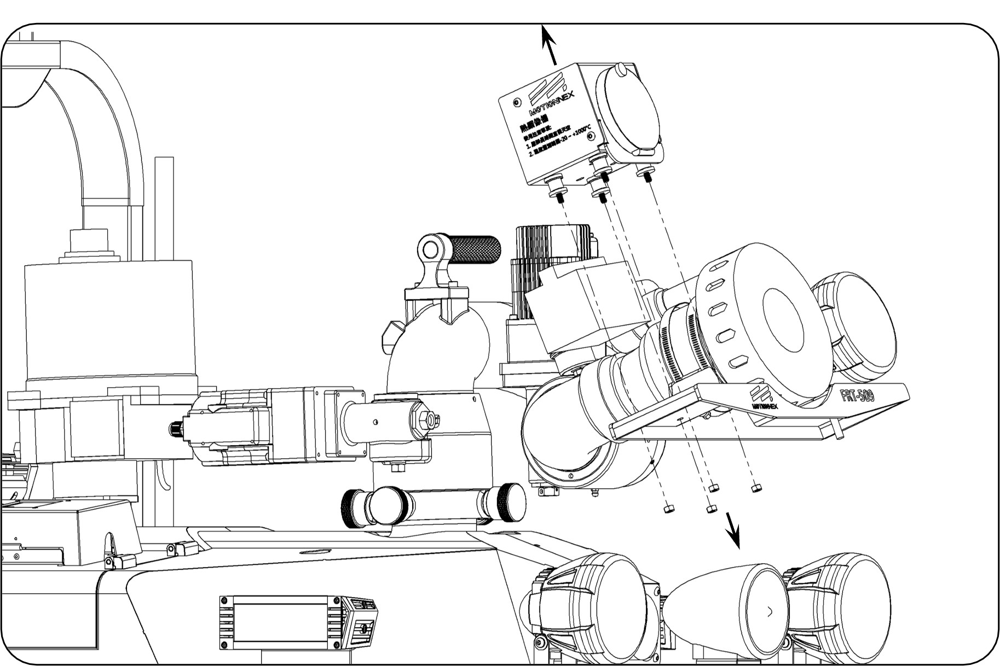
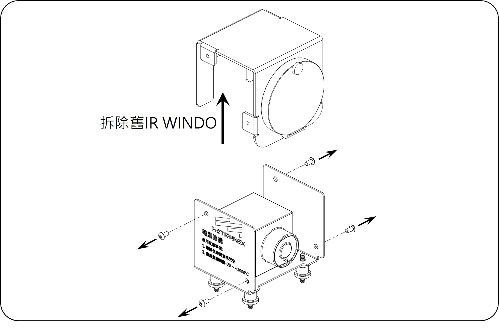

SOP-15：3 吋觀景窗更換
故障描述： IR WINDO 玻璃破損
原因分析： 外力撞擊
原因分析： 外力撞擊
| 項次 | 類別 | 品名 / 料號 | 數量 |
|---|---|---|---|
| 1 | 一般工具 | 13號套筒 / 六角板手組 | 各 1 |
| 2 | 零組件 | 3”IR觀景窗 IP67 (392010003) | 1 |
1. 拆除舊觀景窗
1. 使用六角板手將舊 IR WINDO 側邊螺絲拆卸。
2. 先將機器人電源關機，使用 13 號套筒將 IR WINDO 底座螺帽拆下來。

圖 1：側邊螺絲拆卸位置

圖 2：底座螺帽拆除示意
2. 安裝新觀景窗
1. 使用六角板手將新 IR WINDO 鎖上。
2. 使用 13 號套筒將 IR WINDO 底座螺帽鎖上。

圖 3：新觀景窗置入與鎖固

圖 4：底座螺帽回裝完成